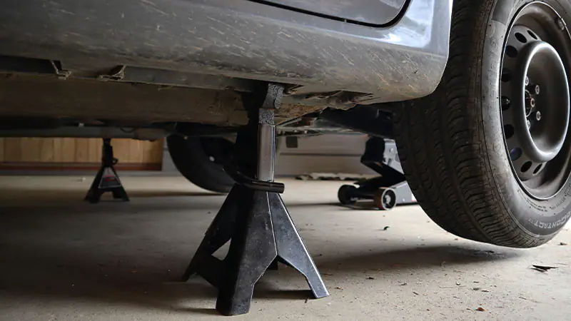
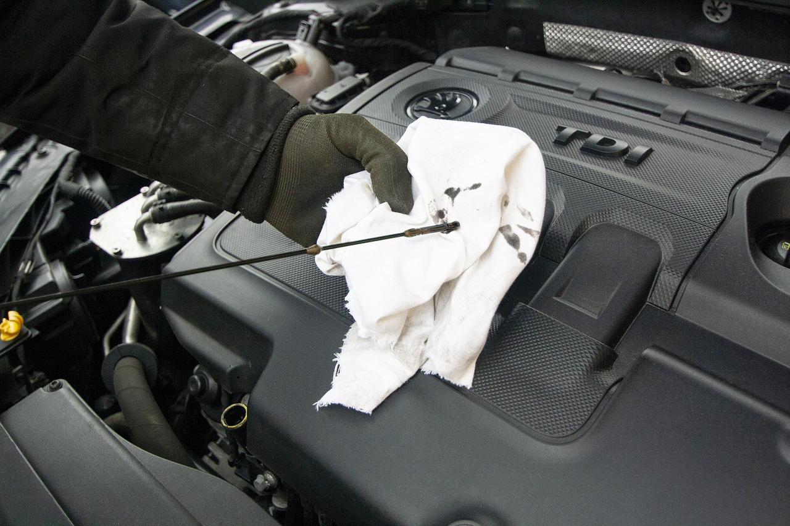

How to do an Oil Change
Ishtiaq Akanda
What is an Oil Change?
Changing the oil in your car is a milestone that must be met frequently in the life of a car, while the amount of miles in between changes is different for each car, it is nonetheless important to the life of the car. However, it is not too difficult and may be well worth the investment. These following steps will help you change your oil on your own.
Required Tools
- Oil
- Oil Filter
- Drain Plug Removal Tool
- Oil Filter Wrench
- Funnel
- Drain Pan
- Gloves
- Jack And Stands
The Steps to Success
- Park the car on a level surface, set the parking brake, and turn off the car’s engine.
- Gather all of the necessary tools and materials you might need.
- Open the hood properly.
- Jack up and support the car securely, After which, make sure the car does not move.

- Locate the oil cap on top of the engine and remove it.
- Place the drain pan under the drain plug and remove the plug using the tool.
- Remove the filter with the wrench and let it drain as well.
- After the oil is drained replace the filter and plug the drain
- Then using the funnel fill the engine with new oil at the recomended dosage.
- After the engine oil is filled to the recomended dosage close the cap and let the engine run for at least 10 seconds.
- Check the oil level by wiping the dip stick and reinserting, checking for the level.

- Finally let the engine run while you check under the car for leaks.
Now you Know how to change your cars oil!
Check out these other tutorials.